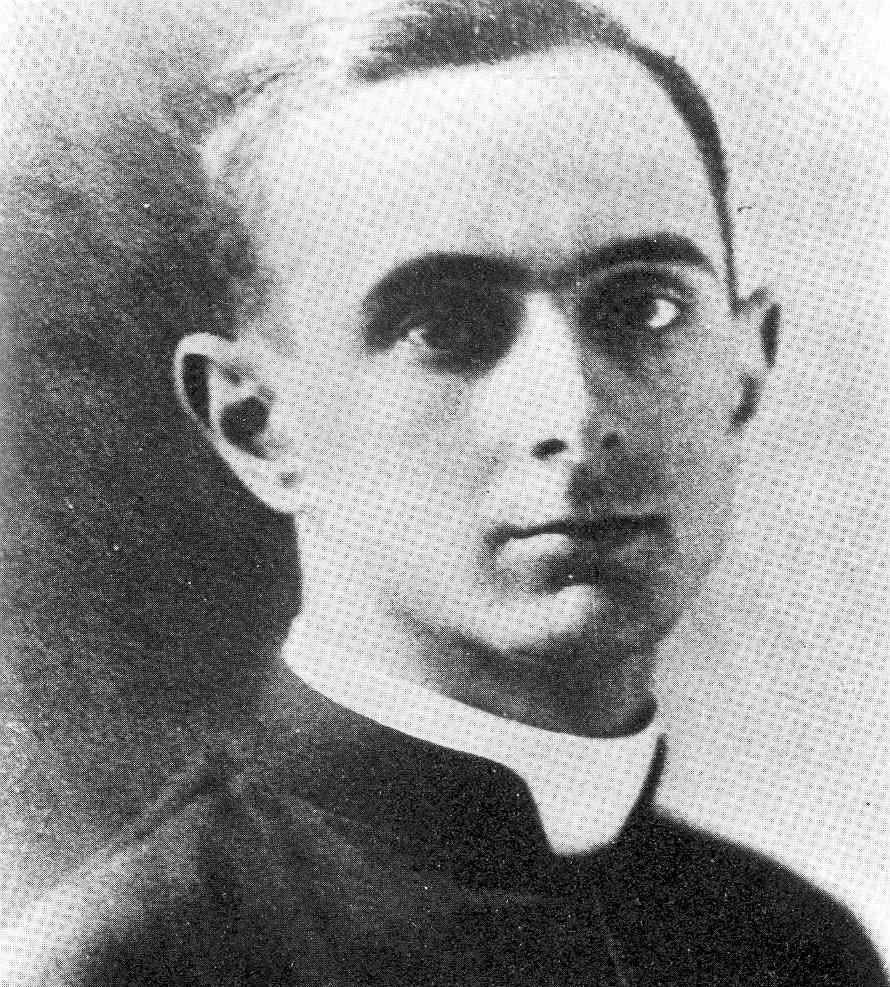
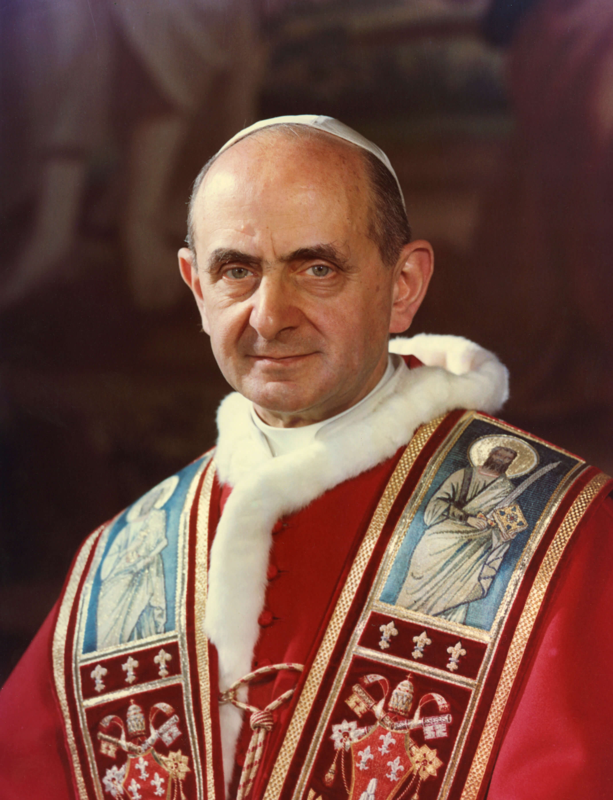
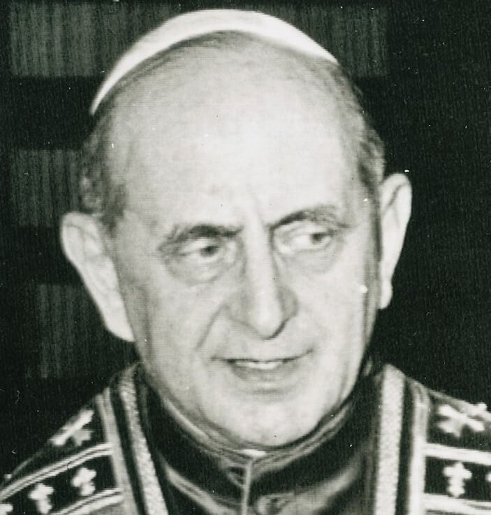
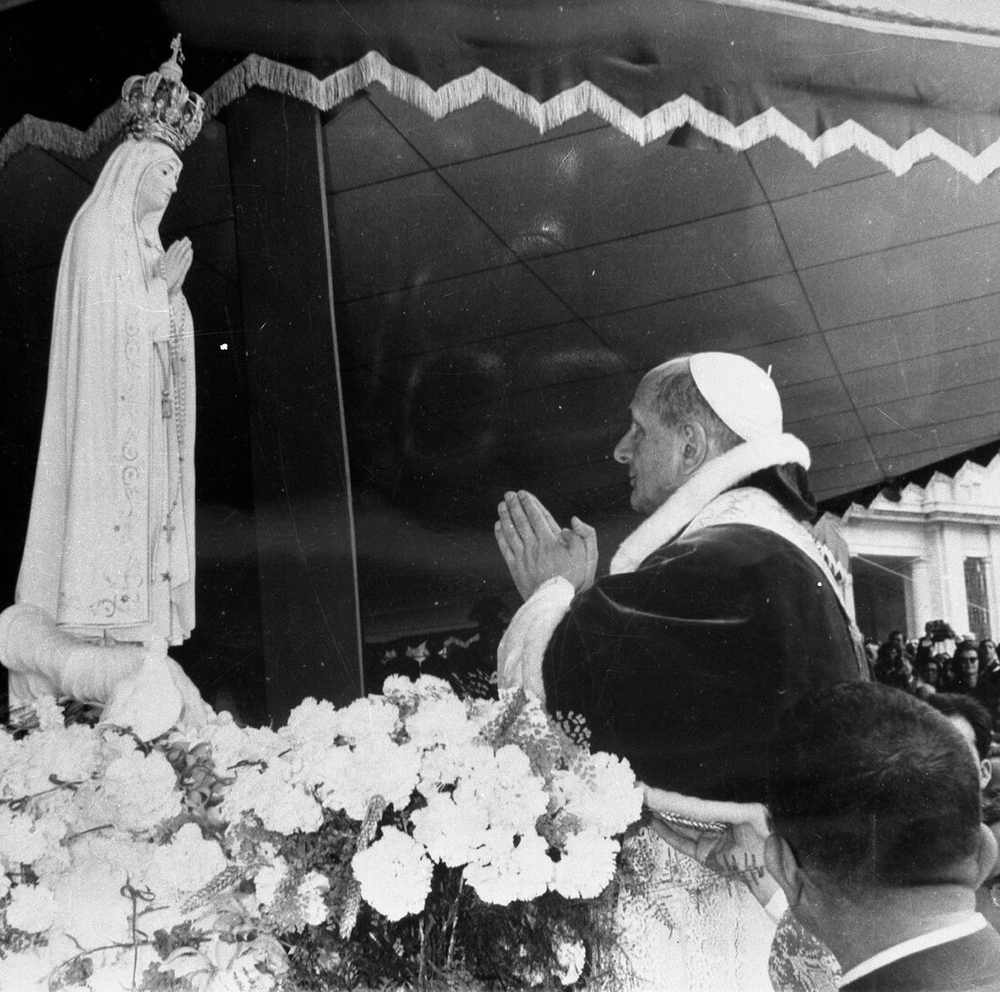
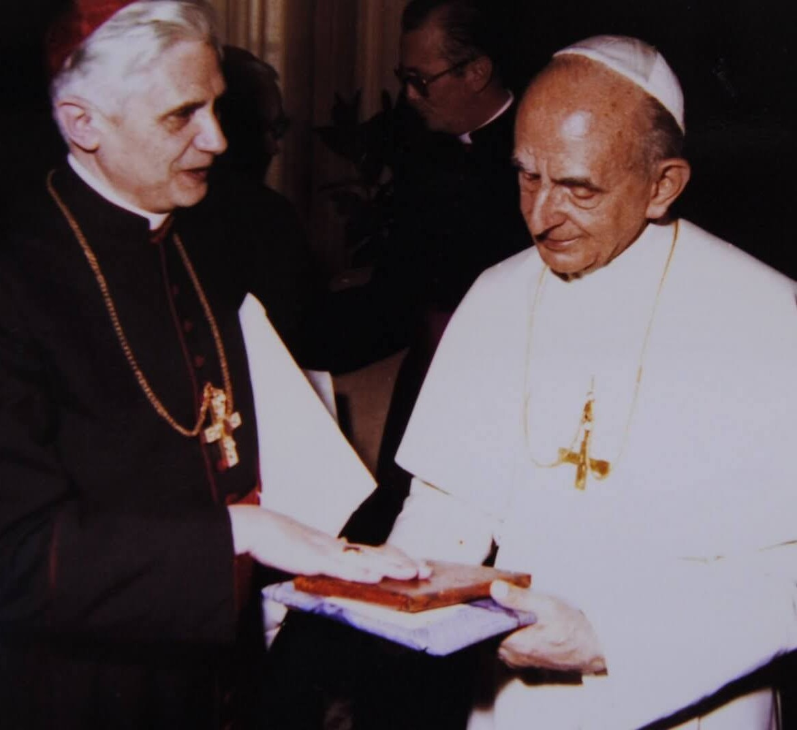

"O Papa do diálogo" — A luz da Igreja no Concílio
"A Igreja tem necessidade da arte, mas a arte tem necessidade da Igreja."

Add dataGiovanni Battista Montini nasceu em 26 de setembro de 1897, em Concesio. Criado em uma família da alta burguesia lombarda, foi educado sob os valores do catolicismo social. A fragilidade física de sua infância, que o obrigou a um isolamento estudioso, moldou um temperamento introspectivo e um intelecto refinado, voltado para a literatura e a filosofia.
Ordenado em 1920, sua trajetória foi marcada por uma intensa atividade intelectual e diplomática. Ele dedicou seus primeiros anos ao apostolado universitário (FUCI), onde formou gerações de jovens católicos para a vida pública. Posteriormente, serviu por mais de três décadas na Secretaria de Estado do Vaticano, sob Pio XI e Pio XII, tornando-se um dos mais experientes e discretos diplomatas da Santa Sé, o que lhe conferiu uma visão global e realista das tensões do século XX.
Em 1954, foi nomeado Arcebispo de Milão. Lá, consolidou sua fama de "Arcebispo dos Trabalhadores", entrando em contato direto com os desafios da industrialização e o distanciamento da classe operária em relação à Igreja. Quando eleito Papa em 1963, herdou um mundo em plena ebulição cultural e uma Igreja em meio a um processo de reforma inédito. Montini não apenas assumiu a cadeira de Pedro; ele assumiu a responsabilidade de ser a ponte entre uma tradição bimilenar e a incerteza da modernidade.
O Concílio Vaticano II (1962–1965) foi, sem dúvida, o centro de seu pontificado. Enquanto João XXIII abriu as janelas, coube a Paulo VI realizar o trabalho complexo de organizar a casa. O Concílio não foi uma ruptura com o passado, mas um aggiornamento: a Igreja reafirmou suas raízes bíblicas enquanto se abria ao diálogo ecumênico e inter-religioso.
O papel do timoneiro: A liderança de Paulo VI foi marcada pelo equilíbrio. Ele resistiu tanto às tentativas de paralisar as reformas quanto às pressões de grupos que desejavam transformações que ele julgava doutrinariamente arriscadas. O resultado foi um corpo de documentos que definiram a identidade católica moderna, centrada na dignidade da pessoa humana e na missão evangelizadora da Igreja no mundo.
Paulo VI revolucionou a imagem do Papado ao tornar-se o primeiro "Papa peregrino", visitando os cinco continentes e levando a mensagem do Evangelho aos centros de poder mundial (como a ONU). Sua encíclica Populorum Progressio (1967) tornou-se a "Magna Carta" do desenvolvimento integral, denunciando as desigualdades entre nações ricas e pobres.
Ao publicar a Humanae Vitae (1968), ele compreendeu que a Igreja deveria ser um sinal de contradição. A incompreensão interna que sofreu por essa encíclica foi seu "martírio silencioso". Ele preferiu a solidão e a impopularidade a abandonar o que considerava ser a verdade sobre o amor humano e a vida, demonstrando que a caridade, sem a verdade, seria apenas um sentimento.
São Paulo VI faleceu em 6 de agosto de 1978, na festa da Transfiguração. Sua vida, iniciada na tranquilidade de Concesio, culminou em um serviço exaustivo, quase solitário, à Igreja universal. Ele não foi um Papa de consensos fáceis, mas um homem de oração e cultura que, nas tormentas da história, manteve o olhar fixo em Cristo. Canonizado em 2018, é hoje lembrado como o Papa que, ao guiar a Igreja pela ponte da modernidade, nunca perdeu de vista o horizonte da Eternidade.
Uma trajetória de serviço, desde as raízes na Lombardia até o pastoreio da Igreja Universal
26 Set 1897
Nasce Giovanni Battista Montini, filho de Giorgio Montini e Giuditta Alghisi.
29 Mai 1920
Recebe o sacramento da Ordem em Brescia, iniciando seu dedicado serviço à Igreja.
1954
Assume a maior arquidiocese da Itália, ganhando o apelido de "Arcebispo dos Trabalhadores".
21 Jun 1963
É eleito sucessor de Pedro e adota o nome de Paulo VI, focando seu pontificado no Concílio.
1964
Torna-se o primeiro Papa da era moderna a viajar, visitando Jerusalém e encontrando-se com o Patriarca Atenágoras.
8 Dez 1965
Conclui com sucesso as sessões do Concílio Vaticano II, entregando à Igreja suas constituições pastorais.
1967
Publica a encíclica sobre o desenvolvimento dos povos, marco fundamental da Doutrina Social da Igreja.
1968
Reafirma a doutrina da Igreja sobre a vida e o amor conjugal, enfrentando críticas com coragem e solidão.
6 Ago 1978
Falece em Castel Gandolfo, na festa da Transfiguração, após um pontificado de transformações históricas.
14 Out 2018
É canonizado pelo Papa Francisco, sendo reconhecido como um dos grandes guias da Igreja moderna.
Os sinais extraordinários que confirmaram a santidade de Paulo VI
01
Califórnia, Estados Unidos
Em 2001, uma mãe grávida foi diagnosticada com uma complicação grave (ruptura da bexiga fetal), com prognóstico médico de morte certa para o bebê ou danos gravíssimos. Após a intercessão pedida a Paulo VI, o feto apresentou uma recuperação inexplicável para a medicina.
Aprovado em 2014 · para a Beatificação02
Verona, Itália
O milagre que abriu caminho para a canonização de Paulo VI também envolveu a cura de um nascituro. Com graves problemas de saúde durante a gestação e risco de morte, a criança foi curada após as orações dirigidas a Paulo VI.
Aprovado em 2018 · para a CanonizaçãoRegistros históricos da vida e do pontificado de São Paulo VI




Imagens utilizadas sob licença de seus respectivos autores. Créditos completos disponíveis aqui.
Documentação e obras de referência para a elaboração deste perfil
Paulo VI: O Papa da modernidade
Jean Guitton · Editora Vozes
Populorum Progressio (1967)
Magistério de Paulo VI · Sobre o desenvolvimento dos povos
Paulo VI: A travessia de um século
Centro Televisivo Vaticano · Arquivos históricos
Ó Deus, Pai de misericórdia, que em São Paulo VI destes à Vossa Igreja um Pastor sábio e corajoso, atento aos sinais dos tempos e incansável promotor da unidade e da paz, concedei-nos, pela sua intercessão, a graça de caminhar sempre na fidelidade ao Evangelho.
Que a sua dedicação ao anúncio de Cristo e o seu amor pelos pobres nos impulsionem a ser testemunhas da Vossa verdade e do Vosso amor no mundo de hoje. Concedei-nos, por seu exemplo, a coragem de servir à Igreja com humildade e esperança, até que alcancemos, convosco, a plenitude da vida eterna.
Por Cristo, nosso Senhor. Amém.